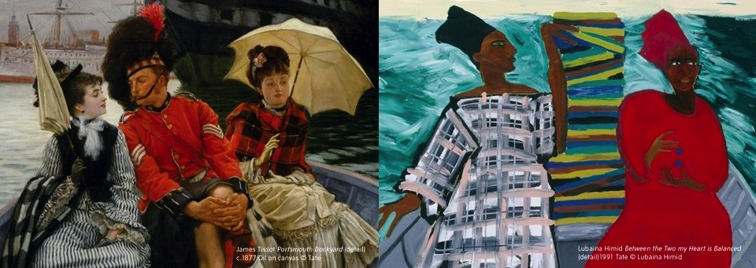

Migracje sztuki brytyjskiej
Co wzbogaca kulturę danego narodu? Bez wątpienia napływ imigrantów, dzięki niemu bowiem w artystycznym tyglu miasta czy kraju wciąż tlą się nowe inspiracje i idee.
Przygotowana przez Tate Britain ekspozycja zgłębia temat migracji artystów od roku tysiąc pięćsetnego po współczesność. Wystawa pokazuje, jak sztukę brytyjską kształtowały kolejne fale cudzoziemców, począwszy od flamandzkich i holenderskich pejzażystów, przybywających do Wielkiej Brytanii w szesnastym i siedemnastym stuleciu w poszukiwaniu nowych patronów. To pięćset lat historii nie tylko artystycznych podróży, ale również obiegu wizualnych idei i języka.